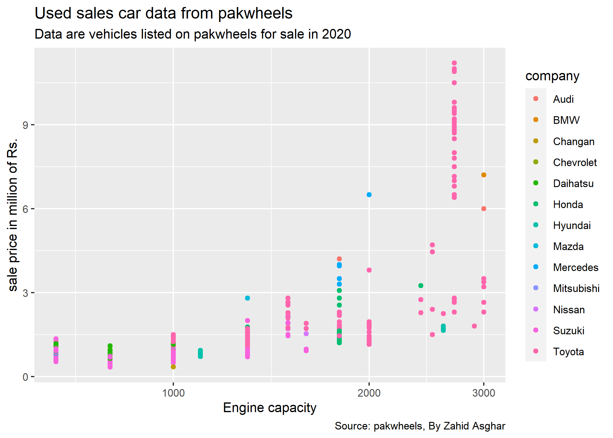

There is an increasing recognition of reproducibility of research, though it has limited recognition in social sciences. The document in your hand is written in Quarto. Quarto which can be used for pdf, html, word, PowerPoint/Slidy/Beamer Presentations, Webpages, LaTex and many others. Besides learning basics of R-coding, another objective of this workshop is understanding the importance of reproducibility. Building this new habit of reproducible work at times maybe little challenging occasionally. Getting rid of culture of copying and pasting, and sparing this time for doing data analysis and research is one of the objectives of this or coming workshops. Purpose is to help you to get away from this tedious activity so that you can spend more time doing science.
Installing and loading packages
The first thing we need to do is install and then load the tidyverse set of R packages to provide us with lots of extra functionality. You only need to install this once: once it’s installed we can simply load it into the workspace using the library() function each time we open a new R session.
Understanding data sets requires many hours/days or in some cases weeks.There are many commercially available software but open source community based software have now dominated and R is one of these. R makes data understanding process as easy as possible through the dplyr package. It is one of the easiest solution for code-based data analysis. We will learn in this training how to do it. In case, you need more information, you can watch my videos.
I have discussed the Gapminder dataset in my videos, you can watch those videos. gapminder package is available through CRAN, so make sure to install it. Here’s how to load in all required packages:
**The dataset to be used is pakwheels data obtained from kaggle and you can download data from the link data download or from my github repository. We read data as follows
Code
#pakwheels_11Jul2020 <- read_csv("C:/Users/92300/Downloads/archive/pakwheels-11Jul2020.csv")#pakwheels<-saveRDS(pakwheels_11Jul2020,file = "pakwheels.rds")pakwheels <-readRDS("D:/RepTemplates/data_analytics/pakwheels.rds")pakwheels## # A tibble: 56,186 × 16## `Ad No` Name Price Model…¹ Locat…² Mileage Regis…³ Engin…⁴ Engin…⁵## <dbl> <chr> <chr> <dbl> <chr> <dbl> <chr> <chr> <chr> ## 1 4096758 Toyota Vi… 2385… 2017 G- 8, … 9869 Un-Reg… Petrol 1000 cc## 2 4168305 Toyota Co… 1110… 2019 Peshaw… 11111 Islama… Petrol 1300 cc## 3 4168298 Suzuki Al… 1530… 2019 Akora … 17500 Un-Reg… Petrol 660 cc ## 4 4168307 Suzuki Al… 1650… 2019 Abdull… 9600 Lahore Petrol 660 cc ## 5 4168306 Toyota Co… 1435… 2010 9th Av… 120000 Islama… Petrol 1300 cc## 6 4168303 Honda Civ… 3850… 2017 Peshaw… 22000 Islama… Petrol 1500 cc## 7 4168304 Suzuki Wa… 1440… 2017 Gulber… 31000 Lahore Petrol 1000 cc## 8 4168309 Mitsubish… 1425… 2012 Askari… 101000 Lahore Petrol 1000 cc## 9 4168310 Toyota Pr… 2650… 1998 Sargod… 110000 Rawalp… Diesel 3000 cc## 10 4168311 Honda Civ… 3350… 2017 Air Av… 60000 Lahore Petrol 1800 cc## # … with 56,176 more rows, 7 more variables: Transmission <chr>,## # Color <chr>, Assembly <chr>, `Body Type` <chr>, Features <chr>,## # `Last Updated` <chr>, URL <chr>, and abbreviated variable names## # ¹`Model Year`, ²Location, ³`Registered City`, ⁴`Engine Type`,## # ⁵`Engine Capacity`
First few rows of data are displayed here and there 56186 observations in total. We will start from scratch and end up a sophisticated analysis. Firs step in dealing with data is to clean up the data and bringing it in workable format. It is said that every tidy data is alike but every messy data is messy in its own way. So lets see whether this data are in neat and clean format.
Data Overview
Pipe operator%>% or |> play very nicely with dplyr and make our code very easy to understand. For this lets have an overview of data for which one can use glimpse() or str() for structure of data and to view entire spreadsheet use View().View command opens data in new worksheet while glimpse lists nature of variables (numeric/character/factor…) and total number of rows and columns.To see first 6 and last 6 observations use head() and tail() ,respectively.
One can observe that Price and Engine Capacity are character variables while we know Price is numeric variable and should fall in cateogry of dbl used in R for numeric variable. Similarly Engine Capacity can be made numeric if we remove cc from it. In the follow chunk I am going to convert these two variables as numeric
Code
pakwheels$price<-as.numeric(pakwheels$Price) ## To convert price as numeric, R-base command. There are other ways to do the samepakwheels$hp <-as.numeric(gsub("([A-Za-z]+).*", "", pakwheels$`Engine Capacity`)) ## To take numeric values from variable Engine Capacity and lets give it a new name: hp.pakwheels$company <-gsub("([A-Za-z]+).*", "\\1", pakwheels$Name) ## To take first word from column Name for taking it a
So far so good. We have converted now three new variables price, hp and company. Variable names should preferably not have space between their names. Better use one word or use hyphen or underscore. Lets have a look at data again.
So now we have 19 variables and price and hp are numeric variables.
Key components of handling data
View, glimpse, structure
head, tail
Column Selection
Data Filtering
Data Ordering
Creating Derived Columns
Calculating Summary Statistics
Grouping
Information in pakwheels data
To rename a variable, there are various ways. I am using a command rename(new_va=old_var).
Code
pakwheels<-pakwheels|>rename(year=`Model Year`)#kbl()#|># kable_styling(bootstrap_options = "striped", full_width = F)#View(pakwheels)pakwheels|>count(year)|>arrange(desc(year))# How many cars by year model are listed for sale# A tibble: 30 × 2 year n<dbl><int>1201931662201838203201746284201644845201549006201444307201333428201231469201126211020102117# … with 20 more rows
As there are a large number of observations and it is not possible to find out through scrolling how many missing observations in the data. We use a command na.omit() to find out how many missing observations and give a new name to our data without losing our original data as follows: glimpse(gapminder) # We see that there are 1704 rows for 6 columns and also tells nature of variable #View(gapminder) # This opens up full data in a new window
So now we have 44,917 observations aftere liminating missing observations.
dplyr features
One of the most widely used package in R for data wrangling is dplyr which is under tidyverse or you can simply recall dplyr.
filter() to keep selected observations
select() to keep selected variables
arrange() to reorder observations by a value
mutate() to create new variables
summarize() to create summary statistics
group_by() for performing operations by group
Now I shall mention some of the powerful but very simple to use features of dplyr. ## Column Selection
More often than not, you don’t need all columns of a data set for your analysis. For example PDHS files have more than 5000 columns in some files and maybe 40 or 50 or even fewer than that are needed for your analysis. Select() function of R’s dplyr is used to select columns of your interest Three selected columns are selected as follows. You can give new name to this data.
Code
pkw %>%select(price, hp, company)## # A tibble: 44,917 × 3## price hp company ## <dbl> <dbl> <chr> ## 1 2385000 1000 Toyota ## 2 111000 1300 Toyota ## 3 1530000 660 Suzuki ## 4 1650000 660 Suzuki ## 5 1435000 1300 Toyota ## 6 3850000 1500 Honda ## 7 1440000 1000 Suzuki ## 8 1425000 1000 Mitsubishi## 9 2650000 3000 Toyota ## 10 3350000 1800 Honda ## # … with 44,907 more rows
In case you want to select most of the variables and drop one or two, you may proceed as follows
Code
pkw |>select(-URL)## # A tibble: 44,917 × 18## `Ad No` Name Price year Locat…¹ Mileage Regis…² Engin…³ Engin…⁴## <dbl> <chr> <chr> <dbl> <chr> <dbl> <chr> <chr> <chr> ## 1 4096758 Toyota Vitz… 2385… 2017 G- 8, … 9869 Un-Reg… Petrol 1000 cc## 2 4168305 Toyota Coro… 1110… 2019 Peshaw… 11111 Islama… Petrol 1300 cc## 3 4168298 Suzuki Alto… 1530… 2019 Akora … 17500 Un-Reg… Petrol 660 cc ## 4 4168307 Suzuki Alto… 1650… 2019 Abdull… 9600 Lahore Petrol 660 cc ## 5 4168306 Toyota Coro… 1435… 2010 9th Av… 120000 Islama… Petrol 1300 cc## 6 4168303 Honda Civic… 3850… 2017 Peshaw… 22000 Islama… Petrol 1500 cc## 7 4168304 Suzuki Wago… 1440… 2017 Gulber… 31000 Lahore Petrol 1000 cc## 8 4168309 Mitsubishi … 1425… 2012 Askari… 101000 Lahore Petrol 1000 cc## 9 4168310 Toyota Prad… 2650… 1998 Sargod… 110000 Rawalp… Diesel 3000 cc## 10 4168311 Honda Civic… 3350… 2017 Air Av… 60000 Lahore Petrol 1800 cc## # … with 44,907 more rows, 9 more variables: Transmission <chr>,## # Color <chr>, Assembly <chr>, `Body Type` <chr>, Features <chr>,## # `Last Updated` <chr>, price <dbl>, hp <dbl>, company <chr>, and## # abbreviated variable names ¹Location, ²`Registered City`,## # ³`Engine Type`, ⁴`Engine Capacity`
So url column is now not shown above.
Data Filtering
Filtering is another very important task one has to do in one’s analysis. Sometimes, one has to select sale related to a particular city or agent or quarter. Here is how one uses filter() command for data with a condition. We are using here command only to select data for year 2007 for all the countries. I am going to explain filter variable of dplyr. filter is used only to select rows for a given condition. I am going to select data only for year 2007.
Compared to previous one, pkw_szk is showing data only for There are 14,199 cars. The tibble (name used for data in tidyverse form) pkw is being piped into the function filter(). The argument company == "Suzuki" tells filter() that it should find all the rows such that the logical condition year == "Suzuki is TRUE.
Have we accidently deleted all other rows? Answer is no.
Nope: we haven’t made any changes to gapminder at all. If you don’t believe me try entering pkw at the console. All that this command does is display a subset of gapminder. If we wanted to store the result of running this command, we’d need to assign it to a variable, for example if you are not sure, lets type
Code
pkw |>filter(company=="Suzuki")## # A tibble: 14,199 × 19## `Ad No` Name Price year Locat…¹ Mileage Regis…² Engin…³ Engin…⁴## <dbl> <chr> <chr> <dbl> <chr> <dbl> <chr> <chr> <chr> ## 1 4168298 Suzuki Alto… 1530… 2019 Akora … 17500 Un-Reg… Petrol 660 cc ## 2 4168307 Suzuki Alto… 1650… 2019 Abdull… 9600 Lahore Petrol 660 cc ## 3 4168304 Suzuki Wago… 1440… 2017 Gulber… 31000 Lahore Petrol 1000 cc## 4 4168320 Suzuki Cult… 9199… 2012 Bismil… 83000 Lahore Petrol 1000 cc## 5 4168327 Suzuki Wago… 1625… 2016 Sui No… 45000 Un-Reg… Petrol 660 cc ## 6 4168332 Suzuki Mehr… 8400… 2018 Sargod… 55000 Islama… Petrol 800 cc ## 7 4168333 Suzuki Khyb… 4000… 2000 MDA Ch… 90000 Multan Petrol 1000 cc## 8 4134011 Suzuki Alto… 1445… 2016 Johar … 65000 Lahore Petrol 660 cc ## 9 4168228 Suzuki Wago… 1495… 2013 Hospit… 85000 Islama… Petrol 660 cc ## 10 4168257 Suzuki Alto… 1495… 2016 Karach… 63000 Karachi Petrol 660 cc ## # … with 14,189 more rows, 10 more variables: Transmission <chr>,## # Color <chr>, Assembly <chr>, `Body Type` <chr>, Features <chr>,## # `Last Updated` <chr>, URL <chr>, price <dbl>, hp <dbl>, company <chr>,## # and abbreviated variable names ¹Location, ²`Registered City`,## # ³`Engine Type`, ⁴`Engine Capacity`
Filtering with respect to two variables
One can apply multiple filters
Code
pkw %>%filter(year=="2019",company=="Toyota") ## year 2019 and company is Toyota
Sort data with arrange Suppose we wanted to sort pkw data for Honda by Color. To do this we can use the arrange command along with the pipe |> as follows:
Code
pkw |>filter(company=="Honda") |>count(Color)|>arrange(n)## This sorts in asceding order## # A tibble: 23 × 2## Color n## <chr> <int>## 1 Magenta 1## 2 Orange 3## 3 Yellow 10## 4 Navy 17## 5 Turquoise 17## 6 Pink 20## 7 Purple 24## 8 Indigo 25## 9 Unlisted 29## 10 Beige 42## # … with 13 more rows
Descending order requires arrange(desc()) comand
Code
pkw |>filter(company=="Honda") |>count(Color)|>arrange(desc(n))## This sorts in asceding order## # A tibble: 23 × 2## Color n## <chr> <int>## 1 White 3425## 2 Black 1848## 3 Silver 1603## 4 Grey 992## 5 Blue 315## 6 Assembly 271## 7 Maroon 162## 8 Red 150## 9 Gold 140## 10 Green 128## # … with 13 more rows
The logic is very similar to what we saw above for filter. Here, I use another important function arrange. The argument count(Color) tells arrange() that we want to sort by Color for Honda company cars. Note that by default arrange() sorts in ascending order. If we want to sort in descending order, we use the function desc().
Change an existing variable or create a new one with mutate
It’s a little hard to read the column peice in pkw data since there are so many digits. Suppose that, instead of price in Rs., we wanted to display price in millions of rupees. This requires us to divide price by 1000000, which we can do using the function mutate() from dplyr as follows:
Code
pkw<- pkw %>%mutate(price_m=price/1000000)
Top bottom prices by companies for pkw data
What are the five lowest and highest car prices for 1300 cc for model year 2017?
Code
pkw |>filter(year=="2017",hp==1300) ## year 2017 and engine capacity 1300## # A tibble: 758 × 20## `Ad No` Name Price year Locat…¹ Mileage Regis…² Engin…³ Engin…⁴## <dbl> <chr> <chr> <dbl> <chr> <dbl> <chr> <chr> <chr> ## 1 4168312 Honda City … 1989… 2017 Lahore… 75000 Lahore Petrol 1300 cc## 2 4168141 Toyota Coro… 2595… 2017 Islama… 41000 Islama… Petrol 1300 cc## 3 4168148 Toyota Coro… 2480… 2017 North … 38000 Karachi Petrol 1300 cc## 4 4168061 Honda City … 2145… 2017 Bahria… 70000 Islama… Petrol 1300 cc## 5 4145330 Toyota Coro… 2540… 2017 Karach… 36000 Karachi Petrol 1300 cc## 6 4145974 Suzuki Swif… 1570… 2017 Garden… 56000 Islama… Petrol 1300 cc## 7 4167831 Toyota Coro… 2400… 2017 Bahria… 50000 Islama… Petrol 1300 cc## 8 3911337 Suzuki Swif… 1575… 2017 A.F.O.… 34000 Karachi Petrol 1300 cc## 9 4167800 Honda City … 2050… 2017 Taj Pu… 85000 Lahore Petrol 1300 cc## 10 4167728 Honda City … 2025… 2017 Rawalp… 80000 Islama… Petrol 1300 cc## # … with 748 more rows, 11 more variables: Transmission <chr>,## # Color <chr>, Assembly <chr>, `Body Type` <chr>, Features <chr>,## # `Last Updated` <chr>, URL <chr>, price <dbl>, hp <dbl>, company <chr>,## # price_m <dbl>, and abbreviated variable names ¹Location,## # ²`Registered City`, ³`Engine Type`, ⁴`Engine Capacity`pkw|>glimpse()## Rows: 44,917## Columns: 20## $ `Ad No` <dbl> 4096758, 4168305, 4168298, 4168307, 4168306, 41…## $ Name <chr> "Toyota Vitz F 1.0 2017", "Toyota Corolla GLi A…## $ Price <chr> "2385000.0", "111000.00000000001", "1530000.0",…## $ year <dbl> 2017, 2019, 2019, 2019, 2010, 2017, 2017, 2012,…## $ Location <chr> "G- 8, Islamabad Islamabad", "Peshawar KPK", "A…## $ Mileage <dbl> 9869, 11111, 17500, 9600, 120000, 22000, 31000,…## $ `Registered City` <chr> "Un-Registered", "Islamabad", "Un-Registered", …## $ `Engine Type` <chr> "Petrol", "Petrol", "Petrol", "Petrol", "Petrol…## $ `Engine Capacity` <chr> "1000 cc", "1300 cc", "660 cc", "660 cc", "1300…## $ Transmission <chr> "Automatic", "Automatic", "Automatic", "Manual"…## $ Color <chr> "Silver", "White", "White", "White", "Black", "…## $ Assembly <chr> "Imported", "Local", "Local", "Local", "Local",…## $ `Body Type` <chr> "Hatchback", "Sedan", "Hatchback", "Hatchback",…## $ Features <chr> "ABS, AM/FM Radio, Air Bags, Air Conditioning, …## $ `Last Updated` <chr> "Jul 11, 2020", "Jul 12, 2020", "Jul 12, 2020",…## $ URL <chr> "https://www.pakwheels.com/used-cars/toyota-vit…## $ price <dbl> 2385000, 111000, 1530000, 1650000, 1435000, 385…## $ hp <dbl> 1000, 1300, 660, 660, 1300, 1500, 1000, 1000, 3…## $ company <chr> "Toyota", "Toyota", "Suzuki", "Suzuki", "Toyota…## $ price_m <dbl> 2.385, 0.111, 1.530, 1.650, 1.435, 3.850, 1.440…pkw |>filter(year=="2017"&hp==1300)|>select(company, price, Assembly,Mileage,Color,Transmission)|>arrange(desc(price))|>top_n(10,price)## # A tibble: 10 × 6## company price Assembly Mileage Color Transmission## <chr> <dbl> <chr> <dbl> <chr> <chr> ## 1 Toyota 3220000 Local 40000 Grey Automatic ## 2 Toyota 3150000 Local 40000 White Manual ## 3 Toyota 3150000 Local 40000 White Manual ## 4 Suzuki 3000000 Local 35000 White Manual ## 5 Toyota 2950000 Local 50000 Silver Automatic ## 6 Toyota 2890000 Local 40000 Silver Automatic ## 7 Toyota 2850000 Local 33000 Bronze Automatic ## 8 Toyota 2800000 Local 14000 Grey Automatic ## 9 Toyota 2800000 Local 15000 Silver Automatic ## 10 Toyota 2800000 Local 20000 Silver Manual
Bottom 10 are reported as follows
Code
pkw |>filter(year=="2017"&hp==1300)|>select(company, price, Assembly,Mileage,Color,Transmission)|>arrange(desc(price))|>top_n(-10,price)## # A tibble: 10 × 6## company price Assembly Mileage Color Transmission## <chr> <dbl> <chr> <dbl> <chr> <chr> ## 1 FAW 1220000 Imported 30000 Gold Manual ## 2 FAW 1215000 Local 91000 White Manual ## 3 FAW 1200000 Local 57000 Gold Manual ## 4 FAW 1200000 Imported 50000 White Manual ## 5 FAW 1200000 Imported 54000 Black Manual ## 6 FAW 1100000 Imported 24000 White Manual ## 7 Suzuki 1100000 Local 67000 White Manual ## 8 FAW 1080000 Local 82000 Silver Manual ## 9 FAW 1075000 Imported 90000 Silver Manual ## 10 Toyota 800000 Local 62800 Grey Automatic
How to calculate new variables
As mentioned above, mutate is used to calculate new variable. Here,we calculate a new variable price_mill (price in million of Rs.) and then arranged data and selected top_n(10) cars transmute() keeps only the derived column. Let’s use it in the example from above:
If one wants to have ordered data with respect to specific column(s), arrange() function is used in dplyr. To arrange data by life expectancy, we use arrange() function
If one wants order from top to bottom, then use arrange(desc()) command as follows:
Summarising data
Another feature of dplyr is summarise data
Code
pkw |>filter(year==2018,hp==1300) |>summarise(mean=mean(price),min=min(price),max=max(price))## # A tibble: 1 × 3## mean min max## <dbl> <dbl> <dbl>## 1 2393775. 239000 3285000
Summarising data by groups
Code
pkw |>filter(year==2018,hp==1300) |>group_by(company) |>summarise(mean=mean(price),min=min(price),max=max(price))## # A tibble: 4 × 4## company mean min max## <chr> <dbl> <dbl> <dbl>## 1 FAW 1305136. 700000 1500000## 2 Honda 2301686. 239000 2750000## 3 Suzuki 1820240 1350000 3285000## 4 Toyota 2661864. 560000 3200000
pkw## # A tibble: 44,917 × 20## `Ad No` Name Price year Locat…¹ Mileage Regis…² Engin…³ Engin…⁴## <dbl> <chr> <chr> <dbl> <chr> <dbl> <chr> <chr> <chr> ## 1 4096758 Toyota Vitz… 2385… 2017 G- 8, … 9869 Un-Reg… Petrol 1000 cc## 2 4168305 Toyota Coro… 1110… 2019 Peshaw… 11111 Islama… Petrol 1300 cc## 3 4168298 Suzuki Alto… 1530… 2019 Akora … 17500 Un-Reg… Petrol 660 cc ## 4 4168307 Suzuki Alto… 1650… 2019 Abdull… 9600 Lahore Petrol 660 cc ## 5 4168306 Toyota Coro… 1435… 2010 9th Av… 120000 Islama… Petrol 1300 cc## 6 4168303 Honda Civic… 3850… 2017 Peshaw… 22000 Islama… Petrol 1500 cc## 7 4168304 Suzuki Wago… 1440… 2017 Gulber… 31000 Lahore Petrol 1000 cc## 8 4168309 Mitsubishi … 1425… 2012 Askari… 101000 Lahore Petrol 1000 cc## 9 4168310 Toyota Prad… 2650… 1998 Sargod… 110000 Rawalp… Diesel 3000 cc## 10 4168311 Honda Civic… 3350… 2017 Air Av… 60000 Lahore Petrol 1800 cc## # … with 44,907 more rows, 11 more variables: Transmission <chr>,## # Color <chr>, Assembly <chr>, `Body Type` <chr>, Features <chr>,## # `Last Updated` <chr>, URL <chr>, price <dbl>, hp <dbl>, company <chr>,## # price_m <dbl>, and abbreviated variable names ¹Location,## # ²`Registered City`, ³`Engine Type`, ⁴`Engine Capacity`pkw|>filter(hp==1300)|>group_by(year,company)|>count(Color)|>summarise(total=sum(n))|>arrange(desc(year))## # A tibble: 135 × 3## # Groups: year [30]## year company total## <dbl> <chr> <int>## 1 2019 FAW 5## 2 2019 Honda 228## 3 2019 Suzuki 84## 4 2019 Toyota 345## 5 2018 FAW 22## 6 2018 Honda 334## 7 2018 Suzuki 100## 8 2018 Toyota 418## 9 2017 FAW 19## 10 2017 Honda 237## # … with 125 more rows
Percentiles
In general, higher the Mileage (more the age of a car) , lower the price. To test this assumption, lets calculate percentiles of price. This will indicate how many have ranking lower than the current country.
So it makes sense that higher the Mileage, lower the price. This is not formal testing but exploratory data makes lot of sense here.
Data visualization
Filtering data as done in introductory analysis seems quite difficult if you are not familiar with these simple things. But if you are working with dplyr for quite sometime, there is not anything very advanced or difficult.
For example, let’s say you have to find out the top 10 countries in the 90th percentile regarding life expectancy in 2007. You can reuse some of the logic from the previous sections, but answering this question alone requires multiple filtering and subsetting:
Code
pkw %>%filter(year==2017) %>%mutate(percentile=ntile(price,100)) %>%filter(percentile>90) %>%arrange(desc(percentile)) %>%top_n(10,wt=percentile) %>%select(company,Mileage,price,hp)## # A tibble: 40 × 4## company Mileage price hp## <chr> <dbl> <dbl> <dbl>## 1 Mercedes 11000 15500000 2000## 2 Toyota 50 42500000 4608## 3 Toyota 4000 26500000 2700## 4 Toyota 25000 42500000 4608## 5 Audi 21000 13500000 1800## 6 Toyota 700 44000000 4600## 7 Mercedes 12900 17500000 2000## 8 Toyota 60000 38000000 4608## 9 Toyota 16500 25500000 2700## 10 Toyota 20000 45000000 4600## # … with 30 more rows
In case you are interested in bottom 10 (lowest price cars), use top_n with -10.
Visualizing data is one of the most important aspect of getting data insight and may provide a better data insight than a complicated model. Visualizing large data sets were not an easy task, so researchers relied on mathematical and core econometric/regression models. ggplot2 which is a set of tidyverse package is probably one of the greatest tool for data visualization used in R. In the following sections we are going to visualize gapminder data.
Stat graphics is a mapping of variable to aesthetic attributes of geometric objects.
3 Essential components of ggplot2
data: dataset containing the variables of interest
geom: geometric object in question line, point, bars
aes: aesthetic attributes of an object x/y position, colors, shape, size
Scatter plot
Code
p1<-pkw|>filter(hp>=600& hp<=3000,`year`==2009)|>mutate(price_m=price/1000000)|>ggplot(aes(x=hp,y=price_m,color=company))+geom_point()+scale_x_log10(labels=scales::dollar)p1+labs(x ="Engine capacity", y ="sale price in million of Rs.",title ="Used sales car data from pakwheels",subtitle ="Data are vehicles listed on pakwheels for sale in 2020",caption ="Source: pakwheels, By Zahid Asghar")

Bubbleplot
If you just want to highlight the relationship between gbp per capita and life Expectancy you’ve probably done most of the work now. However, it is a good practice to highlight a few interesting dots in this chart to give more insight to the plot:
##This is a table of data about a large number of countries, each observed over several years. Let's make a scatterplot with it.#| eval: falseP<-ggplot(data=pkw,mapping =aes(x=hp,y=price)) P+geom_point()+geom_smooth()
#With proper titleP<-ggplot(data=pkw,mapping =aes(hp,y=log(price)))P+geom_point(alpha=0.3)+geom_smooth(method ="gam")+scale_y_log10()+labs(x ="engine capacity", y ="price of a car for sale",title ="pakwheels car sale data",subtitle ="Data points are company-years",caption ="Source: pakwheels.")
##Aesthetics can be mapped per geom#| eval: falsep <-pkw|>filter(hp>500)|>ggplot(aes(x = hp, y =log(price)))p +geom_point(mapping =aes(color = company)) +geom_smooth(method ="loess") +scale_y_log10()+scale_x_log10()
Code
p +geom_point(mapping =aes(color = company)) +scale_x_log10()+scale_y_log10()